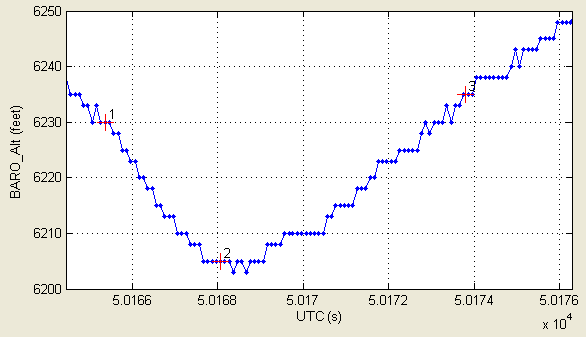
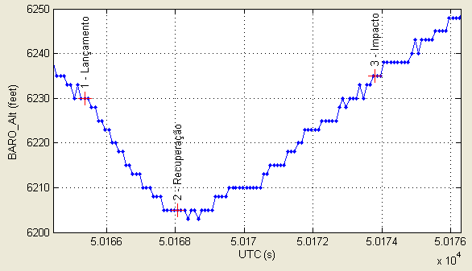

| Menu Exibir |
|
Os eventos são
instantes definidos pelo usuário para marcar
acontecimentos importantes ocorridos durante o voo. Eles são definidos
por um
número, um valor de tempo e uma descrição sucinta. Um dos parâmetros da
matriz
de dados é definido como o tempo de referência para a localização dos
eventos
no tempo.
O cadastramento
e a edição dos eventos são feitos pelo
usuário usando a ferramenta “Editor
de eventos”.
Os eventos são
apresentados no gráfico principal como cruzes
vermelhas acompanhadas de um texto contendo o número do evento e,
opcionalmente, a descrição.
As opções
descritas a seguir controlam a exibição dos
eventos e do respectivo texto.
Exibir
Eventos
Para habilitar
a exibição dos eventos
cadastrados, selecione a opção “Exibir ► Marcadores
de eventos” ou clique no botão na
Barra de Ferramentas. Para desabilitar, desselecione
a opção ou clique novamente no botão.
Se a opção “Exibir descrição dos eventos” não estiver selecionada, os eventos são exibidos apenas com a numeração. A descrição será apresentada ao se passar o cursor sobre um marcador de evento.

Exibir
Descrição dos Eventos
Para habilitar
a exibição das
descrições dos eventos cadastrados, selecione a opção “Exibir ► Descrição dos eventos”. Para desabilitar, desselecione
a opção.
Com a opção
selecionada, os
eventos são exibidos com a numeração e a descrição, e o texto é
posicionado na
vertical.

| |
Pontos
de ensaio |
Exibição
parcial |
 |